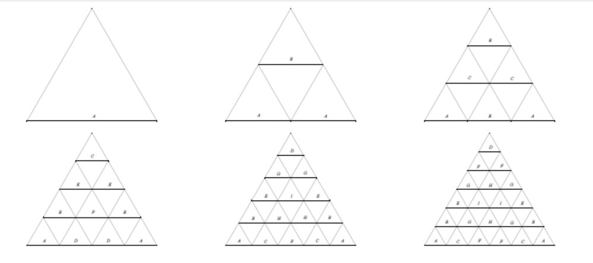
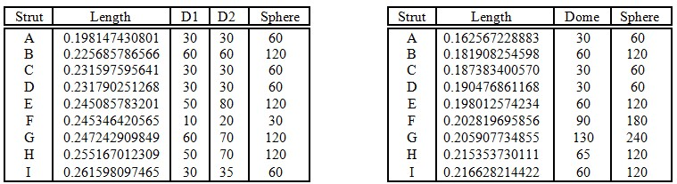

<!DOCTYPE html>
<!--[if IE 6]> <html id="ie6" lang="en-US"> <![endif]-->
<!--[if IE 7]> <html id="ie7" lang="en-US"> <![endif]-->
<!--[if IE 8]> <html id="ie8" lang="en-US"> <![endif]-->
<!--[if !(IE 6) | !(IE 7) | !(IE 8)]><!--> <html lang="en-US"> <!--<![endif]-->


<!-- Mirrored from www.domerama.com/technical/geodesic-domes-by-tom-davis/ by HTTrack Website Copier/3.x [XR&CO'2014], Mon, 11 Jul 2022 18:27:16 GMT -->
<!-- Added by HTTrack --><meta http-equiv="content-type" content="text/html;charset=UTF-8" /><!-- /Added by HTTrack -->
<head>
	<meta charset="UTF-8" />
	<link rel="pingback" href="../../xmlrpc.php" />

	<meta http-equiv="X-UA-Compatible" content="IE=EmulateIE7" />
	<title>  Geodesic Domes by Tom Davis » Domerama</title>
<link rel='shortcut icon' href='../../wp-content/uploads/2012/07/favicon3.ico' />
	<!--[if lt IE 9]>
	<script src="http://www.domerama.com/wp-content/themes/suffusion/scripts/html5.js" type="text/javascript"></script>
	<![endif]-->
 <!-- nextgen scrollGallery 1.8.1 --> 
		   <link rel="alternate" type="application/rss+xml" title="Domerama &raquo; Feed" href="../../feed/index.html" />
<link rel="alternate" type="application/rss+xml" title="Domerama &raquo; Comments Feed" href="../../comments/feed/index.html" />
<link rel='stylesheet' id='nextgen_gallery_related_images-css'  href='../../wp-content/plugins/nextgen-gallery/products/photocrati_nextgen/modules/nextgen_gallery_display/static/nextgen_gallery_related_imagesa7a0.css?ver=3.6.1' type='text/css' media='all' />
<link rel='stylesheet' id='sociablecss-css'  href='../../wp-content/plugins/sociable/css/sociablea7a0.css?ver=3.6.1' type='text/css' media='all' />
<link rel='stylesheet' id='contact-form-7-css'  href='../../wp-content/plugins/contact-form-7/includes/css/styles1aae.css?ver=3.5.3' type='text/css' media='all' />
<link rel='stylesheet' id='wp-polls-css'  href='../../wp-content/plugins/wp-polls/polls-css4d49.css?ver=2.63' type='text/css' media='all' />
<link rel='stylesheet' id='suffusion-theme-css'  href='../../wp-content/themes/suffusion/style946e.css?ver=4.4.7' type='text/css' media='all' />
<link rel='stylesheet' id='suffusion-theme-skin-1-css'  href='../../wp-content/themes/suffusion/skins/light-theme-gray-1/skin946e.css?ver=4.4.7' type='text/css' media='all' />
<!--[if !IE]>--><link rel='stylesheet' id='suffusion-rounded-css'  href='../../wp-content/themes/suffusion/rounded-corners946e.css?ver=4.4.7' type='text/css' media='all' />
<!--<![endif]-->
<!--[if gt IE 8]><link rel='stylesheet' id='suffusion-rounded-css'  href='http://www.domerama.com/wp-content/themes/suffusion/rounded-corners.css?ver=4.4.7' type='text/css' media='all' />
<![endif]-->
<!--[if lt IE 8]><link rel='stylesheet' id='suffusion-ie-css'  href='http://www.domerama.com/wp-content/themes/suffusion/ie-fix.css?ver=4.4.7' type='text/css' media='all' />
<![endif]-->
<link rel='stylesheet' id='suffusion-generated-css'  href='../../indexe6f6.html?ver=4.4.7&amp;suffusion-css=css' type='text/css' media='all' />
<link rel='stylesheet' id='scrollGallery-css'  href='../../wp-content/plugins/nextgen-scrollgallery/scrollGallery/css/scrollGalleryc245.css?ver=1.8.1' type='text/css' media='screen' />
<link rel='stylesheet' id='scrollGalleryDesign-css'  href='../../wp-content/plugins/nextgen-scrollgallery/scrollGallery/css/scrollGallery_noDesignc245.css?ver=1.8.1' type='text/css' media='screen' />
<link rel='stylesheet' id='wp-click-info-style-css'  href='../../wp-content/plugins/wp-click-info/wp-click-infoa7a0.css?ver=3.6.1' type='text/css' media='all' />
<link rel='stylesheet' id='wp-ui-css'  href='../../wp-content/plugins/wp-ui/css/wp-uia7a0.css?ver=3.6.1' type='text/css' media='all' />
<link rel='stylesheet' id='wpui-light-css'  href='../../wp-content/plugins/wp-ui/css/themes/wpui-lighta7a0.css?ver=3.6.1' type='text/css' media='all' />
<link rel='stylesheet' id='wpui-multiple-css'  href='../../wp-content/plugins/wp-ui/css/css6557.css?styles=wpui-light%7Cwpui-blue%7Cwpui-red%7Cwpui-green%7Cwpui-dark%7Cwpui-quark%7Cwpui-alma%7Cwpui-macish%7Cwpui-redmond%7Cwpui-sevin&amp;ver=3.6.1' type='text/css' media='all' />
<script type='text/javascript' src='../../wp-includes/js/jquery/jquery3e5a.js?ver=1.10.2'></script>
<script type='text/javascript' src='../../wp-includes/js/jquery/jquery-migrate.min1576.js?ver=1.2.1'></script>
<script type='text/javascript'>
/* <![CDATA[ */
var photocrati_ajax = {"url":"http:\/\/www.domerama.com\/photocrati_ajax","wp_site_url":"http:\/\/www.domerama.com","wp_site_static_url":"http:\/\/www.domerama.com"};
/* ]]> */
</script>
<script type='text/javascript' src='../../wp-content/plugins/nextgen-gallery/products/photocrati_nextgen/modules/ajax/static/ajaxa7a0.js?ver=3.6.1'></script>
<script type='text/javascript' src='../../wp-content/plugins/sociable/js/sociablea7a0.js?ver=3.6.1'></script>
<script type='text/javascript' src='../../wp-content/plugins/sociable/js/vuiblea7a0.js?ver=3.6.1'></script>
<script type='text/javascript' src='../../wp-content/plugins/sociable/js/addtofavoritesa7a0.js?ver=3.6.1'></script>
<script type='text/javascript' src='../../wp-includes/js/comment-reply.mina7a0.js?ver=3.6.1'></script>
<script type='text/javascript'>
/* <![CDATA[ */
var Suffusion_JS = {"wrapper_width_type_page_template_1l_sidebar_php":"fixed","wrapper_max_width_page_template_1l_sidebar_php":"1200","wrapper_min_width_page_template_1l_sidebar_php":"600","wrapper_orig_width_page_template_1l_sidebar_php":"75","wrapper_width_type_page_template_1r_sidebar_php":"fixed","wrapper_max_width_page_template_1r_sidebar_php":"1200","wrapper_min_width_page_template_1r_sidebar_php":"600","wrapper_orig_width_page_template_1r_sidebar_php":"75","wrapper_width_type_page_template_1l1r_sidebar_php":"fixed","wrapper_max_width_page_template_1l1r_sidebar_php":"1200","wrapper_min_width_page_template_1l1r_sidebar_php":"600","wrapper_orig_width_page_template_1l1r_sidebar_php":"75","wrapper_width_type_page_template_2l_sidebars_php":"fixed","wrapper_max_width_page_template_2l_sidebars_php":"1200","wrapper_min_width_page_template_2l_sidebars_php":"600","wrapper_orig_width_page_template_2l_sidebars_php":"75","wrapper_width_type_page_template_2r_sidebars_php":"fixed","wrapper_max_width_page_template_2r_sidebars_php":"1200","wrapper_min_width_page_template_2r_sidebars_php":"600","wrapper_orig_width_page_template_2r_sidebars_php":"75","wrapper_width_type":"fixed","wrapper_max_width":"1200","wrapper_min_width":"600","wrapper_orig_width":"75","wrapper_width_type_page_template_no_sidebars_php":"fixed","wrapper_max_width_page_template_no_sidebars_php":"1200","wrapper_min_width_page_template_no_sidebars_php":"600","wrapper_orig_width_page_template_no_sidebars_php":"75","suf_featured_interval":"4000","suf_featured_transition_speed":"1000","suf_featured_fx":"fade","suf_featured_pause":"Pause","suf_featured_resume":"Resume","suf_featured_sync":"0","suf_featured_pager_style":"numbers","suf_nav_delay":"0","suf_nav_effect":"none","suf_navt_delay":"500","suf_navt_effect":"fade","suf_jq_masonry_enabled":"disabled","suf_fix_aspect_ratio":"preserve","suf_show_drop_caps":""};
/* ]]> */
</script>
<script type='text/javascript' src='../../wp-content/themes/suffusion/scripts/suffusion946e.js?ver=4.4.7'></script>
<script type='text/javascript' src='../../wp-includes/js/jquery/ui/jquery.ui.core.mindb08.js?ver=1.10.3'></script>
<script type='text/javascript' src='../../wp-includes/js/jquery/ui/jquery.ui.widget.mindb08.js?ver=1.10.3'></script>
<script type='text/javascript' src='../../wp-includes/js/jquery/ui/jquery.ui.tabs.mindb08.js?ver=1.10.3'></script>
<script type='text/javascript' src='../../wp-includes/js/jquery/ui/jquery.ui.accordion.mindb08.js?ver=1.10.3'></script>
<script type='text/javascript' src='../../wp-includes/js/jquery/ui/jquery.ui.mouse.mindb08.js?ver=1.10.3'></script>
<script type='text/javascript' src='../../wp-includes/js/jquery/ui/jquery.ui.resizable.mindb08.js?ver=1.10.3'></script>
<script type='text/javascript' src='../../wp-includes/js/jquery/ui/jquery.ui.draggable.mindb08.js?ver=1.10.3'></script>
<script type='text/javascript' src='../../wp-includes/js/jquery/ui/jquery.ui.button.mindb08.js?ver=1.10.3'></script>
<script type='text/javascript' src='../../wp-includes/js/jquery/ui/jquery.ui.position.mindb08.js?ver=1.10.3'></script>
<script type='text/javascript' src='../../wp-includes/js/jquery/ui/jquery.ui.dialog.mindb08.js?ver=1.10.3'></script>
<script type='text/javascript' src='../../wp-includes/js/jquery/ui/jquery.ui.sortable.mindb08.js?ver=1.10.3'></script>
<script type='text/javascript' src='../../index56aa.html?wpui-script=before&amp;ver=3.6.1'></script>
<script type='text/javascript'>
/* <![CDATA[ */
var wpUIOpts = {"wpUrl":"http:\/\/www.domerama.com","pluginUrl":"http:\/\/www.domerama.com\/wp-content\/plugins\/wp-ui\/","enableTabs":"on","enableAccordion":"on","enableSpoilers":"on","enableDialogs":"on","tabsEffect":"slide","effectSpeed":"400","accordEffect":"slide","alwaysRotate":"stop","tabsEvent":"click","collapsibleTabs":"off","accordEvent":"click","singleLineTabs":"","accordAutoHeight":"on","accordCollapsible":"off","accordEasing":"false","mouseWheelTabs":"false","bottomNav":"on","tabPrevText":"Prev","tabNextText":"Next","spoilerShowText":"Click to show","spoilerHideText":"Click to hide","cookies":"on","hashChange":"on","docWriteFix":"on","linking_history":"on","misc_options":"hashing_method=1\ntinymce_icon_row=3"};
/* ]]> */
</script>
<script type='text/javascript' src='../../wp-content/plugins/wp-ui/js/wp-ui6f86.js?ver=0.8.8'></script>
<script type='text/javascript' src='../../wp-content/plugins/nextgen-scrollgallery/scrollGallery/js/mootools-core-1.3.2-full-compat9e1e.js?ver=1.3.2'></script>
<script type='text/javascript' src='../../wp-content/plugins/nextgen-scrollgallery/scrollGallery/js/scrollGallery2f3e.js?ver=1.12'></script>
<script type='text/javascript' src='../../wp-content/plugins/nextgen-scrollgallery/scrollGallery/js/powertools-mobile-1.1.1c64e.js?ver=1.1.1'></script>
<script type='text/javascript' src='../../wp-content/plugins/wp-click-info/wp-click-info.js5152.html?ver=1.0'></script>
<link rel="EditURI" type="application/rsd+xml" title="RSD" href="../../xmlrpc0db0.php?rsd" />
<link rel="wlwmanifest" type="application/wlwmanifest+xml" href="../../wp-includes/wlwmanifest.html" /> 
<link rel='prev' title='Sketchup 3D Geodesic Tutorial' href='../../software/sketchup-3d-geodesic-tutorial/index.html' />
<link rel='next' title='Event Domes &#8211; Videos' href='../../types-of-domes/event-domes-2/event-domes-videos/index.html' />
<link rel='canonical' href='index.html' />
<!-- SEO by Meta Keywords Generator : techphernalia.com v1.10 start-->
<meta name="keywords" content="Geodesic Domes by Tom Davis, Geodesic, Domes, by, Tom, Davis, Domerama, Build, own, geodesic, Dome, calculator, hub, connector, frequency, EMT, timber, pipe, DIY, Buckminster, Fuller, Domerama, Burning, man, greenhouse, yurt, earthbag, event , krushchke, tyvek, struts, angle, bucky, metal, domebook, cover, PVC, plan, diagram, geodome" />
<meta name="description" content="

Tom Davis

http://www.geometer.org/mathcircles

June 6, 2011geodesic_dome_davis

Click here for the original PDF version 

&nbsp;
1     What Is a Geodesic Dome?


The geodesic dome" />
<!-- SEO by Meta Keywords Generator : techphernalia.com v1.10 end-->
<!-- <meta name="NextGEN" version="2.0.33" /> -->
<script type='text/javascript'>var base_url_sociable = 'http://www.domerama.com/wp-content/plugins/sociable/'</script><script type='text/javascript' src='../../../apis.google.com/js/plusone.js'></script><style type="text/css">
.wp-polls .pollbar {
	margin: 1px;
	font-size: 8px;
	line-height: 10px;
	height: 10px;
	background-image: url('../../wp-content/plugins/wp-polls/images/default_gradient/pollbg.gif');
	border: 1px solid #000333;
}
</style>
<!-- Start Additional Feeds -->
<!-- End Additional Feeds -->
<style type="text/css">.broken_link, a.broken_link {
	text-decoration: line-through;
}</style>		<!-- Custom CSS styles defined in options -->
		<style type="text/css">
			/* <![CDATA[ */
#nav ul ul a {width:400px;}

.textwidget { text-align: center !important;}
#wrapper {border:none;padding-top:0;margin-top:0;}
#horizontal-outer-widgets-1{border:none;padding-top:0;margin-top:0;}
#suf-horizontal-widget{border:none;padding-top:0;margin-top:0;}
#nav div ul li ul li a {width: 250px !important;}

.post, div.page, sidebar, div.suf-widget {border:none;}

#horizontal-outer-widgets-1{border:none;margin:0;padding:0;}

    .blogtitle {
    position:relative;
    top:-10px;
    left:-20px;
    }
#text-10 {border:none;background:none;}

			/* ]]> */
		</style>
		<!-- /Custom CSS styles defined in options -->
<!-- location header -->
<!-- Start Google Analytics -->
<script type="text/javascript">

  var _gaq = _gaq || [];
var pluginUrl =
 '../../../www.google-analytics.com/plugins/ga/inpage_linkid.js';
_gaq.push(['_require', 'inpage_linkid', pluginUrl]);
  _gaq.push(['_setAccount', 'UA-23503493-2']);
  _gaq.push(['_trackPageview']);

  (function() {
    var ga = document.createElement('script'); ga.type = 'text/javascript'; ga.async = true;
    ga.src = ('https:' == document.location.protocol ? 'https://ssl' : 'http://www') + '.google-analytics.com/ga.js';
    var s = document.getElementsByTagName('script')[0]; s.parentNode.insertBefore(ga, s);
  })();

</script>
<!-- End Google Analytics -->


<link rel='stylesheet' id='slb-theme-slb_baseline-base-css'  href='../../wp-content/plugins/simple-lightbox/themes/baseline/css/style53cf.css?ver=2.1' type='text/css' media='all' />
<link rel='stylesheet' id='slb-theme-slb_default-font-css'  href='http://fonts.googleapis.com/css?family=Yanone+Kaffeesatz&amp;ver=2.1' type='text/css' media='all' />
<link rel='stylesheet' id='slb-theme-slb_default-base-css'  href='../../wp-content/plugins/simple-lightbox/themes/default/css/style53cf.css?ver=2.1' type='text/css' media='all' />
</head>

<body class="page page-id-10094 page-child parent-pageid-6007 page-template-default light-theme-gray-1 suffusion-custom preset-1200px device-desktop">
    				<div id="header-container" class="custom-header fix">
			<div class='col-control fix'>
	<header id="header" class="fix">
			<h2 class="blogtitle right"><a href="../../index.html"></a></h2>
		<div class="description right"></div>
    </header><!-- /header -->
 	<nav id="nav" class="continuous fix">
		<div class='col-control left'>
<ul class='sf-menu'>

					<li ><a href='../../index.html'></a></li><li class="page_item page-item-12"><a href="../../calculators/index.html">Calculators</a>
<ul class='children'>
	<li class="page_item page-item-1060"><a href="../../calculators/1v-geodesic-dome-calculator/index.html">1v Geodesic Dome Calculator</a></li>
	<li class="page_item page-item-1056"><a href="../../calculators/2v-geodesic-dome-calculator/index.html">2V Geodesic Dome Calculator</a></li>
	<li class="page_item page-item-1040"><a href="../../calculators/3v-geodesic-dome-calculator/index.html">3V Geodesic Dome Calculators</a></li>
	<li class="page_item page-item-1034"><a href="../../calculators/4v-geodesic-dome-calculator/index.html">4V Geodesic Dome Calculator</a></li>
	<li class="page_item page-item-1028"><a href="../../calculators/5v-geodesic-dome-calculator/index.html">5V Geodesic Dome Calculators</a></li>
	<li class="page_item page-item-354"><a href="../../calculators/6v-geodesic-dome-calculator/index.html">6V Geodesic Dome Calculator</a></li>
	<li class="page_item page-item-6902"><a href="../../calculators/cover-templates-for-3v-59-geodesic-dome/index.html">Cover Templates for 3v 5/9 Geodesic Dome</a></li>
	<li class="page_item page-item-5180"><a href="../../calculators/octahedral-5v-mexican-method/index.html">Octahedral 5v, Mexican method</a></li>
	<li class="page_item page-item-668"><a href="../../calculators/trapezium/index.html">Trapezium Calculator</a></li>
	<li class="page_item page-item-96"><a href="../../calculators/cover-pattern/index.html">Dome Cover Calculator</a></li>
	<li class="page_item page-item-86"><a href="../../calculators/chord-charts/index.html">Chord factor charts</a></li>
	<li class="page_item page-item-92"><a href="../../calculators/metric-conversion/index.html">Metric conversion</a></li>
	<li class="page_item page-item-98"><a href="../../calculators/steel-tubing-weight/index.html">Metal &#038; PVC Pipe weight</a></li>
	<li class="page_item page-item-102"><a href="../../calculators/seating-capacity/index.html">Standing &#038; Seating capacity</a></li>
	<li class="page_item page-item-5525"><a href="../../calculators/geodesic-analysis/index.html">Geodesic Structure Analysis</a></li>
</ul>
</li>
<li class="page_item page-item-2083"><a href="../../general/index.html">General</a>
<ul class='children'>
	<li class="page_item page-item-5012"><a href="../../general/geodesic-dome-projection/index.html">Geodesic Dome projection</a></li>
	<li class="page_item page-item-1917"><a href="../../general/images/index.html">Images</a></li>
	<li class="page_item page-item-9685"><a href="../../general/smart-but-not-wise/index.html">Smart But Not Wise</a></li>
	<li class="page_item page-item-924"><a href="../../general/videos/index.html">Videos</a></li>
	<li class="page_item page-item-1577"><a href="../../general/what-is-burning-man/index.html">What is Burning Man?</a></li>
	<li class="page_item page-item-8079"><a href="../../general/what-is-sacred-geometry/index.html">What is Sacred Geometry?</a></li>
	<li class="page_item page-item-1877"><a href="../../general/what-is-the-eden-project/index.html">What is the Eden Project</a></li>
	<li class="page_item page-item-2402"><a href="../../general/worlds-largest-domes/index.html">World&#8217;s Largest domes</a></li>
</ul>
</li>
<li class="page_item page-item-17"><a href="../../dome-basics/index.html">Dome Basics</a>
<ul class='children'>
	<li class="page_item page-item-104"><a href="../../dome-basics/classes-of-domes/index.html">Classes of Domes</a></li>
	<li class="page_item page-item-1404"><a href="../../dome-basics/domebook-1-2/index.html">Domebook 1 &#038; 2</a></li>
	<li class="page_item page-item-82"><a href="../../dome-basics/explaining-dome-frequency/index.html">Explaining Dome Frequency</a></li>
	<li class="page_item page-item-154"><a href="../../dome-basics/explaining-strut-length-vertex/index.html">Explaining strut length, vertex</a></li>
	<li class="page_item page-item-1253"><a href="../../dome-basics/geodesic-glossary/index.html">Geodesic Glossary</a></li>
	<li class="page_item page-item-632"><a href="../../dome-basics/geodesic-dome-hub-connectors/index.html">Geodesic Hub Connectors</a></li>
	<li class="page_item page-item-1702"><a href="../../dome-basics/geodesic-patents/index.html">Geodesic Patents</a></li>
	<li class="page_item page-item-3235"><a href="../../dome-basics/odd-frequency-geodesic-domes-and-flat-base-at-the-hemisphere/index.html">Leveling the base of a dome</a></li>
	<li class="page_item page-item-1615"><a href="../../dome-basics/steel-glossary/index.html">Steel Glossary</a></li>
</ul>
</li>
<li class="page_item page-item-6007 current_page_ancestor current_page_parent"><a href="../index.html">Tech</a>
<ul class='children'>
	<li class="page_item page-item-6009"><a href="../clintons-equal-central-angle-conjecture/index.html">Clinton’s Equal Central Angle Conjecture</a></li>
	<li class="page_item page-item-6060"><a href="../structural-analysis-of-geodesic-domes/index.html">Structural  Analysis of Geodesic  Domes</a></li>
</ul>
</li>
<li class="page_item page-item-19"><a href="../../coverings/index.html">Coverings</a>
<ul class='children'>
	<li class="page_item page-item-879"><a href="../../coverings/canvas-tarps/index.html">Canvas &#038; Tarps</a></li>
	<li class="page_item page-item-7556"><a href="../../coverings/etfe/index.html">ETFE</a></li>
	<li class="page_item page-item-2643"><a href="../../coverings/woven-poly/index.html">Woven Poly</a></li>
	<li class="page_item page-item-575"><a href="../../coverings/aluminet/index.html">Aluminet</a></li>
	<li class="page_item page-item-106"><a href="../../coverings/shrink-wrap/index.html">Shrink Wrap</a></li>
	<li class="page_item page-item-577"><a href="../../coverings/tyvek/index.html">Tyvek</a></li>
	<li class="page_item page-item-110"><a href="../../coverings/plastic-film/index.html">Poly Films</a></li>
	<li class="page_item page-item-112"><a href="../../coverings/plywood-osb/index.html">Plywood &#038; OSB</a></li>
	<li class="page_item page-item-114"><a href="../../coverings/shingles/index.html">Shingles and roofing geodesic domes</a></li>
	<li class="page_item page-item-590"><a href="../../coverings/polycarbonate-panels/index.html">Polycarbonate panels</a></li>
	<li class="page_item page-item-162"><a href="../../coverings/parachute/index.html">Parachute</a></li>
</ul>
</li>
<li class="page_item page-item-8"><a href="../../types-of-domes/index.html">Dome Types</a>
<ul class='children'>
	<li class="page_item page-item-168"><a href="../../types-of-domes/bamboo/index.html">Bamboo</a></li>
	<li class="page_item page-item-7168"><a href="../../types-of-domes/earth-buildings/index.html">Earth Buildings</a></li>
	<li class="page_item page-item-11358"><a href="../../types-of-domes/geodesic-hotel/index.html">Geodesic Hotel</a></li>
	<li class="page_item page-item-13434"><a href="../../types-of-domes/glass-geodesic-domes/index.html">Glass Geodesic domes</a></li>
	<li class="page_item page-item-3794"><a href="../../types-of-domes/greenhouses/index.html">Greenhouses</a></li>
	<li class="page_item page-item-11192"><a href="../../types-of-domes/hexayurts/index.html">Hexayurts</a></li>
	<li class="page_item page-item-6042"><a href="../../types-of-domes/pillow-dome/index.html">Pillow Dome</a></li>
	<li class="page_item page-item-2712"><a href="../../types-of-domes/geodesic-pool-domes/index.html">Pool domes</a></li>
	<li class="page_item page-item-2753"><a href="../../types-of-domes/randomes/index.html">Randomes</a></li>
	<li class="page_item page-item-2827"><a href="../../types-of-domes/straw-bale-dome/index.html">Straw Bale Dome</a></li>
	<li class="page_item page-item-2306"><a href="../../types-of-domes/yurts/index.html">Yurts</a></li>
	<li class="page_item page-item-5751"><a href="../../types-of-domes/event-domes-2/index.html">Event Domes</a></li>
</ul>
</li>
<li class="page_item page-item-10"><a href="../../raising-a-dome/index.html">Dome Raising</a>
<ul class='children'>
	<li class="page_item page-item-1208"><a href="../../raising-a-dome/equipment-and-machines/index.html">Equipment and Machines</a></li>
	<li class="page_item page-item-52"><a href="../../raising-a-dome/foundation/index.html">Anchoring</a></li>
	<li class="page_item page-item-56"><a href="../../raising-a-dome/wood-deck/index.html">Decking</a></li>
	<li class="page_item page-item-2102"><a href="../../raising-a-dome/interview-econodome/index.html">Interview: Econodome</a></li>
	<li class="page_item page-item-2563"><a href="../../raising-a-dome/assembly-diagrams/index.html">Assembly Diagrams</a></li>
	<li class="page_item page-item-5881"><a href="../../raising-a-dome/gum-pole-geodesic-dome-in-zimbabwe/index.html">Gum pole Geodesic dome in Zimbabwe</a></li>
	<li class="page_item page-item-5921"><a href="../../raising-a-dome/geodesic-dome-on-zero-budget/index.html">Geodesic dome on zero budget</a></li>
	<li class="page_item page-item-9740"><a href="../../raising-a-dome/geodesic-domes-and-assembly-times/index.html">Geodesic domes and assembly times</a></li>
	<li class="page_item page-item-10035"><a href="../../raising-a-dome/concrete-geodesic-dome-foundation-example/index.html">Concrete geodesic dome foundation example</a></li>
	<li class="page_item page-item-11677"><a href="../../raising-a-dome/bear-creek-geodesic-dome-construction/index.html">Bear Creek Geodesic Dome construction</a></li>
</ul>
</li>
<li class="page_item page-item-15"><a href="../../fabricating/index.html">Fabricating</a>
<ul class='children'>
	<li class="page_item page-item-7099"><a href="../../fabricating/4v-timber-dome-construction/index.html">4V timber dome construction</a></li>
	<li class="page_item page-item-522"><a href="../../fabricating/bolts/index.html">Bolts</a></li>
	<li class="page_item page-item-7981"><a href="../../fabricating/build-a-yurt-model/index.html">Build a yurt model</a></li>
	<li class="page_item page-item-120"><a href="../../fabricating/color-coding/index.html">Color Coding</a></li>
	<li class="page_item page-item-10564"><a href="../../fabricating/diy-projects/index.html">DIY projects</a></li>
	<li class="page_item page-item-9682"><a href="../../fabricating/dome-builders-blues/index.html">Dome Builder&#8217;s Blues</a></li>
	<li class="page_item page-item-663"><a href="../../fabricating/making-doors/index.html">Making doors</a></li>
	<li class="page_item page-item-6790"><a href="../../fabricating/making-geodesic-models/index.html">Making Geodesic Models</a></li>
	<li class="page_item page-item-584"><a href="../../fabricating/making-the-struts/index.html">Making the struts</a></li>
	<li class="page_item page-item-8135"><a href="../../fabricating/the-diy-yummy-yuletide-yurt/index.html">The DIY Yummy Yuletide Yurt</a></li>
	<li class="page_item page-item-137"><a href="../../fabricating/equipment-and-machines/index.html">Tools and Equipment</a></li>
</ul>
</li>
<li class="page_item page-item-21"><a href="../../software/index.html">Software</a>
<ul class='children'>
	<li class="page_item page-item-5019"><a href="../../software/dome-projection-software/index.html">Dome Projection Software</a></li>
	<li class="page_item page-item-3429"><a href="../../software/geodesic-dome-framing-with-sketchup/index.html">Geodesic Dome Framing with Sketchup</a></li>
	<li class="page_item page-item-1212"><a href="../../software/geodesic-software/index.html">Geodesic software</a></li>
	<li class="page_item page-item-1021"><a href="../../software/sketchup-3d-models/index.html">Sketchup 3D Geodesic Models</a></li>
	<li class="page_item page-item-10056"><a href="../../software/sketchup-3d-geodesic-tutorial/index.html">Sketchup 3D Geodesic Tutorial</a></li>
	<li class="page_item page-item-4386"><a href="../../software/sketchup-yurt-models/index.html">SketchUp 3D Yurt Models</a></li>
	<li class="page_item page-item-2605"><a href="../../software/sketchup-stadiums-arenas/index.html">Sketchup Stadiums &#038; Arenas</a></li>
</ul>
</li>
<li class="page_item page-item-1720"><a href="../../contact/index.html">Contact</a></li>
<li class="page_item page-item-1733"><a href="../../links/index.html">Links</a></li>
<li><a href="../../feed/index.html" >RSS Feed</a></li>

</ul>
		</div><!-- /col-control -->
	</nav><!-- /nav -->
			</div>
		</div><!-- //#header-container -->
		<div id="wrapper" class="fix">
		<!-- horizontal-outer-widgets-1 Widget Area -->
<div id="horizontal-outer-widgets-1" class="dbx-group flattened warea fix">
	<!-- widget start --><aside id="text-30" class="suf-flat-widget suf-horizontal-widget suf-widget-1c widget_text">			<div class="textwidget"><a href="https://www.pacificdomes.com/home/clearance-items" target="blank">
</a>

<div align="center"><table width="" border="0" align="center" cellpadding="2" cellspacing="2">
<br />
  <tr>
    <td align="center"><a href="../../types-of-domes/yurts/index.html"></a></td>
    <td align="center"><a href="../../calculators/index.html"></a></td>
    <td align="center"><a href="../../fabricating/diy-projects/index.html"></a></td>
    <td align="center"><a href="../../general/what-is-the-eden-project/index.html"></a></td>
    <td align="center"><a href="../../types-of-domes/hexayurts/index.html"></a></td>
    <td align="center"><a href="../../dome-basics/index.html"></a></td>
    <td align="center"><a href="../../general/what-is-burning-man/index.html"></a></td>
    <td align="center"><a href="../../raising-a-dome/geodesic-dome-on-zero-budget/index.html"></a></td>
    <td align="center"><a href="../../types-of-domes/straw-bale-dome/index.html"></a></td>
  </tr>
  <tr>
    <td align="center"><a href="../../general/worlds-largest-domes/index.html"></a></td>
    <td align="center"><a href="../../dome-basics/geodesic-dome-hub-connectors/index.html"></a></td>
    <td align="center"><a href="../../types-of-domes/randomes/index.html"></a></td>
    <td align="center"><a href="../../types-of-domes/greenhouses/index.html"></a></td>
    <td align="center"><a href="../../fabricating/making-geodesic-models/index.html"></a></td>
    <td align="center"><a href="../../general/geodesic-dome-projection/index.html"></a></td>
    <td align="center"><a href="../../calculators/cover-templates-for-3v-59-geodesic-dome/index.html"></a></td>
    <td align="center"><a href="../../types-of-domes/event-domes-2/index.html"></a></td>
    <td align="center"><a href="../../fabricating/making-geodesic-models/geodesic-paper-dome/index.html"></a></td>
  </tr>
  <tr>
    <td align="center"><a href="http://freeplans.domerama.com/"></a></td>
    <td align="center"><a href="../../fabricating/build-a-yurt-model/index.html"></a></td>
    <td align="center"><a href="../../software/geodesic-software/index.html"></a></td>
    <td colspan="3" align="center"><a href="../../innovations-with-domes/index.html"></a></td>
    <td align="center"><a href="../../geodesic-dome-plans/index.html"></a></td>
    <td align="center"><a href="../../software/sketchup-3d-models/index.html"></a></td>
    <td align="center"><a href="../../types-of-domes/earth-buildings/index.html"></a></td>
  </tr>
</table><br />
</div></div>
		</aside><!-- widget end --></div>
<!-- /horizontal-outer-widgets-1 -->			<div id="container" class="fix">
				

<!DOCTYPE html PUBLIC "-//W3C//DTD XHTML 1.0 Transitional//EN" "http://www.w3.org/TR/xhtml1/DTD/xhtml1-transitional.dtd">
<html xmlns="http://www.w3.org/1999/xhtml" lang="en-US">

<head profile="http://gmpg.org/xfn/11">
	<meta http-equiv="Content-Type" content="text/html; charset=UTF-8" />
	<link rel="pingback" href="../../xmlrpc.php" />


<link rel='stylesheet' id='slb-theme-slb_baseline-base-css'  href='../../wp-content/plugins/simple-lightbox/themes/baseline/css/style53cf.css?ver=2.1' type='text/css' media='all' />
<link rel='stylesheet' id='slb-theme-slb_default-font-css'  href='http://fonts.googleapis.com/css?family=Yanone+Kaffeesatz&amp;ver=2.1' type='text/css' media='all' />
<link rel='stylesheet' id='slb-theme-slb_default-base-css'  href='../../wp-content/plugins/simple-lightbox/themes/default/css/style53cf.css?ver=2.1' type='text/css' media='all' />
</head>

<div id="main-col">
	<div id="subnav" class="fix">
		<div class="breadcrumb">
	<a href='../index.html'>Tech</a> &raquo; Geodesic Domes by Tom Davis		</div>
	</div><!-- /sub nav -->
		<div id="content">
		<article class="post-10094 page type-page status-publish hentry meta-position-corners fix" id="post-10094">
<header class="post-header fix">
	<h1 class="posttitle">Geodesic Domes by Tom Davis</h1>
</header>
			<div class="postdata fix">
			</div>
		<span class='post-format-icon'>&nbsp;</span><span class='updated' title='2013-01-04T21:18:32-05:00'></span>			<div class="entry-container fix">
				<div class="entry fix">
					<div>
<p>Tom Davis</p>
<p><a href="http://www.geometer.org/mathcircles" target="_blank" class="broken_link"><strong>http://www.geometer.org/mathcircles</strong></a></p>
<p>June 6, 2011geodesic_dome_davis</p>
<p><a href="../../wp-content/uploads/2013/01/geodesic_dome_davis.pdf" target="_blank"><strong>Click here for the original PDF version</strong> </a></p>
<p>&nbsp;</p>
<h2><b>1     What Is a Geodesic Dome?</b></h2>
<p></p>
<p>The geodesic dome was invented by R. Buckminster (Bucky) Fuller (1895-1983) in 1954. Fuller was an inventor, architect, engineer, designer, geometrician, cartographer and philosopher. In Figure 1 is illustrated a fairly complex version of a dome that&#8217;s composed of small triangles that are approximately equal, and such that the vertices of the triangles all lie on the surface of a sphere. On the right of the figure is a recently-released postage stamp honoring Fuller.</p>
<p>In this article, we&#8217;ll look at the mathematics that lies behind geodesic domes, but we&#8217;ll also talk a little about why they make good engineering sense and how they might be constructed from real materials.</p>
<p>There are plenty of resources on the web on geodesic domes, but one that&#8217;s particularly helpful, especially if you have any desire to build one of your own, is here: www.desertdomes.com, which includes a dome calculator that does many of the calculations for you.</p>
<p>&nbsp;</p>
<h2><b>2     Engineering Considerations</b></h2>
<p>A sphere is the mathematical object that contains the maximum volume compared to its surface area, so if a structure of large volume is to be constructed for minimum cost, it makes sense to look at structures whose shape approaches a sphere. But most construction materials come as flat or strai ght pieces, so forming the curves that would be necessary to make a perfect sphere might increase the expense considerably.</p>
<p>But structures like the one illustrated in Figure 1 closely approximate spheres, but are composed of straight struts or of flat triangles, depending on the construction method.</p>
<p>If the structure is composed of struts, there is another consideration; namely, that it should be composed completely of triangles. If it consists of any quadrilaterals or more complex polygons, they can flex if the connections at the ends are not completely rigid. If the pieces, for example, are just connected with a bolt through a number of struts, it is almost impossible to make the joints rigid. But if the structure is completely composed of triangles, it can be made completely rigid, even if the individual joints are not.</p>
</div>
<p>One final engineering consideration is that if the triangles of which the structure is composed are all as close to equilateral triangles as possible, then the stresses will be approximately the same on all the struts, so there is very little wasted strength. Note that in the model at the beginning of this article, all of the triangles appear to be approximately equilateral.</p>
<div>
<p> Finally, in very large structures, it is a bad idea to have very long unsupported struts. The longer the struts, the easier they are to bend if shear forces are applied.</p>
<p>&nbsp;</p>
<h2><b>3     Perfect and Imperfect Solutions</b></h2>
<div id="attachment_10107" class="wp-caption aligncenter" style="width: 790px"><p class="wp-caption-text">Figure 2: Platonic Solids</p></div>
<h2><strong> </strong></h2>
<p>A perfect solution will be composed of triangles that are all equilateral, all the same size, and all making equal angles with each other. Unfortunately, this can only be achieved with three mathematical forms: the tetrahedron, the octahedron and the icosahedron. Figure 2 illustrates all three.</p>
<p>These so-called platonic solids are approximations to the sphere, but only the icosahedron is very close, and to make a large structure from it would require very long struts.</p>
<p>One way to proceed is simply to subdivide the triangles in one of the regular platonic solids, and this is how a geodesic dome is constructed. Any of the three solids could be used, but as we shall see, there are some serious problems if this is done beginning with a tetrahedron, and less-serious problems (but problems, nonetheless) if we begin with an octahedron.</p>
<p></p>
<dl class="wp-caption aligncenter" id="attachment_10106" style="width: 726px;">
<dd class="wp-caption-dd">Figure 3: Uniform Triangle Subdivision</dd>
</dl>
<p>&nbsp;</p>
<p>We&#8217;ll begin by describing the standard construction of domes of various complexity beginning with an icosahedron. It is easy to subdivide an equilateral triangle into 4, 9, 16, or any perfect square number of sub-triangles, as is illustrated in Figure 3.</p>
<p>But if we simply subdivide the triangles of an icosahedron, although the vertices of the original icosahedron will lie on the surface of a sphere, the vertices that we need to add to subdivide the triangles will lie in the planes of those triangles and will be physically inside the sphere. This sort of subdivision will also tend to be a lot weaker structurally, since to maintain perfectly flat surfaces, the strengths of t he joints would have to be infinite (see the “found” poetry from a physics text, below).</p>
</div>
<p>&nbsp;</p>
<div>
<p>Hence no force, however great, can stretch a cord, however fine, into a horizontal line which is accurately straight&#8230;</p>
<p><i>—William Whewell, Elementary Treatise on Mechanics (1819)</i></p>
<p>&nbsp;</p>
<div id="attachment_10105" class="wp-caption aligncenter" style="width: 793px"><p class="wp-caption-text">Figure 4: 3V, 4V and 5V Domes</p></div>
<p>Our solution will be simply to “push” those points out to the s urface of the sphere from the center, but to do that we&#8217;ll need to be able to work with three-dimensional vectors and coordinate systems. First, we&#8217;ll look at some of the tools that are needed to work with three-dimensional vectors and then we&#8217;ll begin by looking closely at the icosahedron.</p>
<p></p>
<dl class="wp-caption aligncenter" id="attachment_10104" style="width: 587px;">
<dd class="wp-caption-dd">Figure 5: 3V and 5V Domes: Small Versions</dd>
</dl>
<p> The names, “3V”, “4V” and “5V” refer to the number of subdivisions that are made to the original triangles in the icosahedron before they are pushed out to the surface of the sphere. In Figure 1 you can also see a 6V dome. Notice that the domes of odd degree, the 3V and the 5V domes are slightly larger than a half sphere. That&#8217;s because when there are an odd number of triangles in the subdivision, there is no center line or “equator” at which to divide it, so we have to pick a version that is a little larger or a little smaller than a half sphere. In the examples in Figure 4, the larger versions were displayed. In Figure 5 appear the smaller versions of the 3V and 5V domes.</p>
<div id="attachment_10103" class="wp-caption aligncenter" style="width: 590px"><p class="wp-caption-text">Figure 6: Dome Spheres: 3V, 4V, 5V and 6V</p></div>
<p>You may find it useful to see images of the original spheres fro m which all of the dome models above were cut. Those appear in Figure 6. It&#8217;s clear from these images that the 4V and 6V spheres have an equator and the others do not. If every vertex of the 3V sphere represents a carbon atom, then the sphere represents the molecule called “Buckminsterfullerine” which really exists, and has some very useful chemical and physical properties.</p>
</div>
<div>
<div id="attachment_10102" class="wp-caption aligncenter" style="width: 591px"><p class="wp-caption-text">Figure 7: The 2V Dome and Sphere</p></div>
<p>&nbsp;</p>
<p>All the domes displayed in Figures 5 and 4 are fairly complicated to build; the easiest that can reasonably be called a geodesic dome is the 2V version. Figure 7 displays the 2V dome (a half-sphere) and the corresponding 2V sphere.</p>
<p>It&#8217;s obvious if you think about it, but if you look closely at the spheres in Figure 6, you can see that almost all the vertices on larger domes have six struts that meet at each. In every case, there are exactly 12 of the 5-strut vertices (on the entire sphere). This is, of course, the number of 5-strut vertices there are in the original icosahedron.</p>
<p>&nbsp;</p>
<h2><b>4     Vector Tools</b></h2>
<p>We are going to do all of our work in a three-dimensional coordinate system. This is very similar to the two-dimensional systems that are introduced in every high-school algebra course with an <b>x</b> and a <b>y</b> axis, but we will add a third, the <b>z</b> axis, which is perpendicular to the other two. If we start at the origin of such a system, we can give directions to every point in space by giving three numbers: the distance to travel parallel to each of the axes (with negative distances meaning to move in the opposite direction).</p>
<p>One tool we will need is a method to find the distance between tw o points, but this can be obtained as a simple extension of the Pythagorean theorem. If the two points have coordinates <b>P</b><sub>0</sub> <b>= (x</b><sub>0</sub> <b>, y</b><sub>0</sub><b>, z</b><sub>0</sub><b>)</b> and <b>P</b><sub>1</sub> <b>= (x</b><sub>1</sub> <b>, y</b><sub>1</sub><b>, z</b><sub>1</sub><b>)</b>, then the distance <b>D</b> between them is given by the formula:</p>
</div>
<div>
<p><b>D(P</b><sub>0</sub><b> , P</b><sub>1</sub><b>)  =       (x</b><sub>0</sub><b>  − x</b><sub>1</sub><b>)</b><sup>2</sup><b>  + (y</b><sub>0</sub><b>  − y</b><sub>1</sub><b>)</b><sup>2</sup><b>  + (z</b><sub>0</sub><b>  − z</b><sub>1</sub><b>)</b><sup>2</sup><b> .</b></p>
<p>Of course if one of the points is the origin <b>O</b>, this reduces to:</p>
<p><b>D(O, P</b><sub>0</sub><b> )  =       x</b><sup>2</sup><sub>0</sub><b>  + y</b><sub>0</sub><sup>2</sup><b>  + z</b><sub>0</sub><sup>2</sup><b>.</b></p>
<p>&nbsp;</p>
<p>Notice also that if you have the coordinates that describe an object then you can uniformly scale the object by multiplying all the coordinates by a constant. So if you have the coordinates for a geodesic dome with diameter 1 foot and you want to build a dome with diameter 20 feet, you can just take all the coordinates for your 1 foot dome and multiply them by 20 to obtain coordinates for the new one. Similarly, all the strut lengths will be 20 times as long, et cetera.</p>
<p>For this reason, we will work in coordinates that are easy to use, and if we ever desire to build a real dome, all we need to do is find the appropriate factor once and multiply all of the numbers by that.</p>
<p>&nbsp;</p>
</div>
<div>
<h2><b>5     The Icosahedron</b></h2>
<p>An icosahedron is a regular polyhedron with 20 sides, each of which is an equilateral triangle, and at each vertex, 5 triangles meet (see Figure 8). If you view an icosahedron with one vertex on top and another at the bottom, you can see that there are two rings of five vertices each, making a tot al of 12. There are 20 triangles, since 5 touch the top vertex, 5 touch the bottom and there are 10 in the band around the center.</p>
<p>It&#8217;s also easy to count edges: there are 30. This is because if you cut the entire figure into triangles, each of the 20 triangles would have 3 edges making 60 (after cutting), but when assembled, every pair of adjacent triangles shares an edge so the uncut version would contain half that many, or 30.</p>
<div id="attachment_10109" class="wp-caption aligncenter" style="width: 310px"><p class="wp-caption-text">Figure 8: Icosahedron</p></div>
<p></p>
<p>&nbsp;</p>
<p>It is a bit tedious to check, but the length of all 30 of the segments in the list above is 2. For example, the length of <b>AB </b>is given by:<b><sub>√</sub></b></p>
<p style="text-align: center;"><b>|</b><b>AB</b><b>| =       (0 − 0)</b><sup>2</sup><b>  + (1 − (−1))</b><sup>2</sup><b>  + (</b><b>φ</b><b> − </b><b>φ</b><b>)</b><sup>2</sup><b>  =      4  =  2</b><b>.</b></p>
<p>Another typical calculation yields the length of the segment <b>AE</b>:</p>
</div>
<div></div>
<div></div>
<div></div>
<div>
<p>Notice that all the vertices of our icosahedron lie on the surface of a sphere centered at the origin. That&#8217;s obvious because in every case, the coordinates, in some order, have a <b>0</b>, a <b>1</b> and a <b>φ</b>, the last two possibly preceded by a negative sign. But to calculate the distance from the origin to that point, we just square all three numbers (which will eliminate any influence from any negative numbers) add the three together (yielding the same sum in every case) and take the square root of the result.</p>
</div>
<div>
<p> For the particular coordinates that we&#8217;ve chosen, the radius of the sphere in which the icosahedron is inscribed turns out to be about <b>1</b><b>.</b><b>90211303</b> units. This isn&#8217;t a particularly nice number, but it&#8217;s worth it to have particularly nice and relatively uniform coordinates for all the vertices.</p>
<div id="attachment_10110" class="wp-caption aligncenter" style="width: 324px"><p class="wp-caption-text">Figure 9: The Golden Ratio</p></div>
<p>A nice way to visualize the vertices of an icosahedron is that they lie on the corners of three rectangles that are centerd at the origin, have aspect ratios of <b>1 :</b> <b>φ</b>, and are all perpendicular to each other. To see that the aspect ratio is <b>1 : </b><b>φ</b>, see Figure 9.</p>
<p>In that figure, all the angles of the regular pentagon <b>ABCDE</b> are <b>108</b><b><sup>◦</sup></b>. The line <b>AB</b> forms an isosceles triangle, <b>△</b><b>ABC</b>, whose base angles must be<b>36</b><b><sup>◦</sup></b>. If we then bisect<b><sup>6</sup></b><b> ACD </b>with<b> CF </b>, it&#8217;s easy to calculate the other angles in the figure are as marked.</p>
<p>But now <b>△</b><b>ACD</b>  <b>∼ △</b><b>CDF</b> , so <b>AC/CD</b>  <b>=</b>  <b>CD/DF</b> .  If the side length of the regular pentagon is <b>1</b> and the length f the unknown diagonal is <b>L</b>, we obtain: <b>L/</b><b>1  =  1</b><b>/</b><b>(</b><b>L</b><b>−</b><b>1)</b>, which is easily solved for <b>L</b> yielding <b>L</b> <b>=</b>  <b>φ</b> <b>= </b><strong>(1+√5)/2</strong></p>
</div>
<div></div>
<div></div>
<div>
<h2><b>6     Strut Lengths</b></h2>
<p>If we consider the 2V dome, each of the equivalent equilateral triangles from the icosahedron is subdivided into 4 triangles and then the inner three vertices are pushed out to the surface of the inscribing sphere. Each of the original sides of each triangle will become two equal pieces on the surface of the 2V dome, and three additional pieces are added to form the inner triangle. The three struts that make up the inner triangle are of equal length, as are the six struts that were made by subdivision and pushing out of the original edges of the icosahedron. It&#8217;s easy to verify by calculation that the two lengths are different, but that all of the struts in the final dome or sphere are one of those two lengths.</p>
<p>A similar, but slightly more complex analysis shows us that in the 3V dome, exactly three different strut lengths are required.</p>
<p>Thus if you&#8217;re making a 2V dome, there are only two different strut lengths required—for the dome, not the sphere, exactly 30 of the shorter length and 35 of the longer length are required. Since the dome can be arbitrarily scaled, it&#8217;s possible to find the optimal lengths for the two struts, given that you can purchase the raw material in fixed lengths.</p>
<p>A standard construction material for domes is steel electrical conduit that comes in 10-foot lengths in the United States. If you&#8217;d like to purchase the minimum number of these and yet make a dome of maximal size, you simply need to cut each length into two pieces that are in the proper ratio. With 35 10-foot pieces, you can make the 35 long and 30 short struts and have 5 extra short struts at the end. (It&#8217;s probably a good idea to get a few more than 35, in case</p>
</div>
<p>There&#8217;s a manufacturing error, and so that you will have at least a couple of spares of the longer length.) If holes are drilled in the ends of the struts, the problem of optimization is only a tiny bit more complicated.</p>
<div>
<p> So let&#8217;s see how to calculate the strut lengths, beginning with the 2V dome. We&#8217;ll consider the original triangle <b>AIJ </b>of the icosahedron listed in the previous section. The approximate coordinates of<b> A</b>,<b> I </b>and<b> J </b>are<b>(0</b><b>, </b><b>1</b><b>, </b><b>1</b><b>.</b><b>618)</b>,<b>(1</b><b>,</b><b> 1</b><b>.</b><b>618</b><b>,</b><b> 0) </b>and<b> (−1</b><b>,</b><b> 1</b><b>.</b><b>618</b><b>,</b><b> 0)</b>, respectively.</p>
<p>There are many ways to  proceed, but one approach is this.  We noted earlier that the radius of the sphere in which  the icosahedron is centered is <b>(1 +</b> <b>φ</b><sup>2</sup><b>) = 1</b><b>.</b><b>902</b>. Thus if we divide all the coordinates by <b>1</b><b>.</b><b>902</b> we will have all the vertices on the surface of a sphere of radius <b>1</b>. Using the same names for the vertices, this will give us the following sets of coordinates: <b>A</b> <b>= (0</b><b>, .</b><b>5257</b><b>, .</b><b>8507)</b>, <b>I</b> <b>= (</b><b>.</b><b>5257</b><b>, .</b><b>8507</b><b>,</b> <b>0)</b> and <b>J</b> <b>= (−</b><b>.</b><b>5257</b><b>, .</b><b>8507</b><b>,</b> <b>0)</b>.</p>
<p>The lengths of segments <b>AI</b> , <b>IJ</b>  and <b>J A</b> are all equal to:</p>
<p style="text-align: center;"><b>(</b><b>.</b><b>5257</b><sup>2</sup><b>  + (</b><b>.</b><b>8507 − </b><b>.</b><b>5257)</b><sup>2</sup><b>  + </b><b>.</b><b>8507</b><sup>2</sup><b>)  ≈ 1</b><b>.</b><b>0515</b><b>.</b></p>
<p> To find the midpoint of segment   <b>AI</b> , we need to find the average coordinates of vertices   <b>A</b> and <b>I</b> : <b>(</b><b>.</b><b>5257</b><b>/</b><b>2</b><b>,</b> <b>(</b><b>.</b><b>5257+.</b><b>8507)</b><b>/</b><b>2</b><b>, .</b><b>8507</b><b>/</b><b>2) = (</b><b>.</b><b>2628</b><b>, .</b><b>6882</b><b>, .</b><b>4254)</b>. A similar computation gives the midpoint of<b> I </b>and<b> J </b>as<b>(0</b><b>, .</b><b>8507</b><b>, </b><b>0)</b>.Both of these vectors have the same length, namely <b>.</b><b>8507</b>, so to push them to the surface of the sphere, we need to divide all the coordinates by <b>.</b><b>8507</b>, yielding <b>M</b> <b>= (</b><b>.</b><b>3089</b><b>, .</b><b>8090</b><b>, .</b><b>5)</b> and <b>N</b> <b>= (0</b><b>,</b> <b>1</b><b>,</b> <b>0)</b>, respectively, where <b>M</b> and <b>N</b> are the locations of the midpoints of the segments after they have been pushed out to the surface of the sphere.</p>
<p>The two strut lengths required to make a dome or sphere of radius 1 are thus equal to the lengths of <b>AM</b> and <b>M N</b> , which we calculate to be: <b>|</b><b>AM</b> <b>|</b> <b>=</b> <b>.</b><b>5465</b> and <b>|</b><b>M N</b> <b>|</b> <b>=</b> <b>.</b><b>6180</b>.</p>
<p>Suppose we wish to construct an optimal 2V dome, using 10-foot pieces of electrical conduit, where we plan to flatten the ends and to drill holes one inch in from each end to a ttach the struts together. Basically, there are 4 “wasted” inches because we will need four holes after cutting the struts. Thus the original piece of conduit is effectively only 9 feet 8 inches, or 9.6666 inches long. This has to be divided in a ratio of <b>|</b><b>AM</b> <b>|</b><b>/</b><b>|</b><b>M N</b> <b>|</b>, so the pieces will have lengths 4.536 feet and 5.130 feet.</p>
<p>Similar calculations can be made for any dome. With the kind permission of Tara Landry who constructed and maintains www.desertdomes.dom, we include the strut length information for subdivisions for 1V through 6V domes. Figure 10 shows the different lengths required for each triangular subdivision, and the associated tables display the ratios of the various lengths, assuming you want to build a dome with radius 1.0. In Figure 10, the struts are only labeled in the horizontal direction. The labels can be rotated to obtain the lengths in the two other directions.</p>
<p>In addition, the number of struts of each of the lengths are shown to make a dome (or, in the case of an odd-V dome, both the smaller and the larger version) or a sphere. For example, if you want to make the larger 5V dome of radius 1.0, you will need 30 of the “A” struts having length 0.198147 430801, 60 of the “B” struts, et cetera.</p>
<p></p>
<div id="attachment_10112" class="wp-caption aligncenter" style="width: 760px"><a href="../../wp-content/uploads/2013/01/tom_davis_fig10.jpg" data-slb-group="10094" data-slb-active="1" data-slb-internal="0"></a><p class="wp-caption-text">Figure 10: Strut Subdivision Lengths</p></div>
<div>
<p>&nbsp;</p>
<p></p>
<p>If the dome is an even-V form based on the icosahedron, the midpoints of the original triangles on the “equator” all lie exactly on the equator, so any subdivisions of those equatorial lines will also lie in the plane of the equator. When those points are pushed out to the surface, they will lie on a mathematically perfect plane, and a dome so constructed will lie perfectly on perfectly flat ground.</p>
<p>For odd-V domes of degree 3 or greater, there are no point on the equator, so we have to decide whether to go up a “half rank” or down a “half rank” from the true equator to make our dome. In either case, the points up one rank are <i>not </i>in a perfect plane, but they are close enough that it often doesn&#8217;t matter. As the odd degree gets larger and larger,the error becomes less and less.</p>
<p>&nbsp;</p>
<h2><b>7     Triangle Coordinates</b></h2>
<p>If you know the 3D coordinates of the three vertices of a triangle in space and you wish to subdivide that triangle into <b>n</b><sup>2</sup> smaller triangles and to determine the coordinates of the points of subdivision, the process is fairly simple. Let&#8217;s use the example where <b>n</b> <b>= 6</b> so the triangle is subdivided into <b>6</b><sup>2</sup> <b>= 36</b> smaller triangles as in the following illustration:</p>
<div id="attachment_10116" class="wp-caption aligncenter" style="width: 503px"><a href="../../wp-content/uploads/2013/01/tom_davis_fig10b.jpg" data-slb-group="10094" data-slb-active="1" data-slb-internal="0"></a><p class="wp-caption-text">Click to enlarge</p></div>
</div>
<div>
<p>&nbsp;</p>
<p>If the 3D coordinates of the points at the top, bottom left and bottom right are <b>A</b>, <b>B</b> and <b>C</b>, respectively, then the coordinates of the interior points are given by the labels in the figure above, divided by <b>6</b>. Thus the point labeled <b>2A + 3B + 1C </b>will have coordinates<b> A/3 + B/2 + C/6</b>, et cetera. The coordinates are easily generated. Start fromany vertex (say <b>A</b>, in which case the coordinates will be <b>6A</b> <b>+ 0B</b> <b>+ 0C</b> – in other words, all <b>A</b>) and step along the lines to the desired vertex. Each time you step along a line in the direction from vertex <b>Q</b> toward vertex <b>R</b>, subtract 1 from the <b>Q</b> values and add 1 to the <b>R</b> value.</p>
<p>&nbsp;</p>
<h2><b>8     A Complete Example</b></h2>
<p>In this section, we will illustrate exactly how the strut lengths can be calculated. We will do it for a 4V dome. The general plan is this: we will find the coordinates for pairs of points that correspond to the different strut lengths, but on a sphere with radius <b>1.000</b>. Then we will find the distances between these pairs. If you th en wish to make a geodesic dome of radius <b>r</b>, you simply need to multiply all the strut lengths obtained by <b>r</b>.</p>
<p>Each of the original triangles in the dome are divided into <b>16</b> parts as in the following illustration:</p>
</div>
<div></div>
<div><br />
In each of the subdivided triangles, there are four types of points, labeled <b>A</b>, <b>B</b>, <b>C</b>  and <b>D</b>  in the illustration.  When they are projected to the surface of the sphere, there will be six different strut lengths: <b>AB</b>, <b>BB</b>, <b>BC</b>, <b>BD</b>, <b>CD</b> and <b>DD</b>, where we assume that the two points are adjacent. To find thes e lengths, we will calculate coordinates for the particular points <b>v</b><sub>0</sub><b>, v</b><sub>1</sub><b>, . . . , v</b><sub>7</sub> on the triangle (some inside the sphere), we will project those to the surface of a  unit  sphere,  where  they  will  become  <b>v</b><sub>0</sub><b><sup>′</sup></b><b>, v</b><sub>1</sub><b><sup>′</sup></b><b>, . . . , v</b><sub>7</sub><b><sup>′</sup></b>,  and  we  will  find  the  lengths  using  these  pairs:</div>
<div></div>
<div><b>AB</b>   <b>=</b>   <b>v</b><sub>0</sub><b><sup>′</sup></b><b>v</b><sub>3</sub><b><sup>′</sup></b>,</div>
<div>
<p><b>BB  </b><b>=</b><b>  v</b><sub>3</sub><b><sup>′</sup></b><b>v</b><sub>5</sub><b><sup>′</sup></b>,<b> BC  </b><b>=</b><b>  v</b><sub>3</sub><b><sup>′</sup></b><b>v</b><sub>4</sub><b><sup>′</sup></b>,<b> BD  </b><b>=</b><b>  v</b><sub>3</sub><b><sup>′</sup></b><b>v</b><sub>7</sub><b><sup>′</sup></b>,<b> CD  </b><b>=</b><b>  v</b><sub>4</sub><b><sup>′</sup></b><b>v</b><sub>6</sub><b><sup>′</sup></b><b>  </b>and finally,<b>   DD  </b><b>=</b><b>  v</b><sub>6</sub><b><sup>′</sup></b><b>v</b><sub>7</sub><b><sup>′</sup></b>.</p>
<p>We can let <b>v</b><sub>0</sub><b>, v</b><sub>1</sub> and <b>v</b><sub>2</sub> be the vertices of any of the triangles on the original icosahedron, and they are all approximately equally complex, so let us say that:</p>
<p>v0 = (0, 1, )<br />
v1 = (1, , 0)<br />
v2 = (, 0, 1)</p>
<p>All the internal vertices of the triangle are simple linear combinations of <b>v</b><sub>0</sub><b>, v</b><sub>1</sub>  and <b>v</b><sub>2</sub> , so we obtain:</p>
<p>v3 = (3/4)v0 + (1/4)v2 = ((1/4), (3/4), (1/4)+ (3/4))<br />
v4 = (2/4)v0 + (2/4)v2 = ((1/2), (1/2), (1/2)+ (1/2))<br />
v5 = (3/4)v0 + (1/4)v1 = ((1/4), (3/4) + (1/4), (3/4))<br />
v6 = (1/4)v0 + (1/2)v2 + (1/4)v1 = ((1/4) + (1/2), (1/4) + (1/4), (1/2) + (1/4))<br />
v7 = (1/2)v0 + (1/4)v2 + (1/4)v1 = ((1/4) + (1/4), (1/2) + (1/4), (1/4) + (1/2))</p>
<p>&nbsp;</p>
<p>Since  is just a number (phi = 1.61803398 . . .), we have:<br />
v0 = (0.00000000, 1.00000000, 1.61803398)<br />
v1 = (1.00000000, 1.61803398, 0.00000000)<br />
v2 = (1.61803398, 0.00000000, 1.00000000)<br />
v3 = (0.40450849, 0.75000000, 1.46352549)<br />
v4 = (0.80901699, 0.50000000, 1.30901699)<br />
v5 = (0.25000000, 1.15450849, 1.21353549)<br />
v6 = (1.05901699, 0.65450849, 0.90450849)<br />
v7 = (0.65450849, 0.90450849, 1.05901699)</p>
<p>The vertices <b>v</b><sub>0</sub><b>, v</b><sub>1</sub><b>, . . . , v</b><sub>7</sub> are on the triangle and except for <b>v</b><sub>0</sub><b>, v</b><sub>1</sub> and <b>v</b><sub>2</sub> , all lie inside the sphere. What we will do is to project every one of the vertices above onto a sphere of radius <b>1</b><b>.</b><b>000</b>. To do this, if the point has coordinates</p>
<p><b>v</b><sub>i</sub><b>= (</b><b>x</b><sub>i</sub><b> , y</b><sub>i</sub><b>, z</b><sub>i</sub><b>)</b>, we can find the coordinates of the projected point as follows . First, calculate<b> r</b><sub>i</sub><b>=</b><b> x</b><sup>2</sup><sub>i</sub><b>+</b><b> y</b><sub>i</sub><sup>2</sup><b>+</b><b> z</b><sub>i</sub><sup>2</sup>and then the projected point will have the following coordinates: <b>v</b><sub>i</sub><b><sup>′</sup></b> <b>= (</b><b>x</b><sub>i</sub> <b>/r</b><sub>i</sub> <b>, y</b><sub>i</sub><b>/r</b><sub>i</sub> <b>, z</b><sub>i</sub><b>/r</b><sub>i</sub><b>)</b>. When we do this with the points above, we obtain:</p>
</div>
<p>v′0 = (0.00000000, 0.52573111, 0.85065080)<br />
v′1 = (0.52573111, 0.85065080, 0.00000000)<br />
v′2 = (0.85065080, 0.00000000, 0.52573111)<br />
v′3 = (0.23885564, 0.44286271, 0.86418782)<br />
v′4 = (0.50000000, 0.30901699, 0.80901699)<br />
v′5 = (0.14762090, 0.68171835, 0.71656692)<br />
v′6 = (0.68819096, 0.42532540, 0.58778525)<br />
v′7 = (0.42532540, 0.58778525, 0.68819096)</p>
<p>If we have two points v′i = (xi, yi, zi) and v′j = (xj , yj , zj) then the distance between them is given by:</p>
<div>
<p style="text-align: center;"><b>D</b><sub>ij</sub><b>   =       (x</b><sub>i</sub><b>  − x</b><sub>j</sub><b> )</b><sup>2</sup><b>  + (y</b><sub>i</sub><b>  − y</b><sub>j</sub><b> )</b><sup>2</sup><b>  + (z</b><sub>i</sub><b>  − z</b><sub>j</sub><b> )</b><sup>2</sup></p>
<p>So, for example, to calculate the length of the <b>AB</b> strut, we need to calculate the distance between <b>v</b><sub>0</sub><b><sup>′</sup></b> and <b>v</b><sub>3</sub><b><sup>′</sup></b>. Plugging the numbers above into the formula, we obtain <b>AB</b> <b>= 0.25318</b> <b>. . .</b>, which agrees with the values in the table. The other lengths can be obtained similarly.</p>
<p>&nbsp;</p>
<h2><b>9     How Many Struts Are Required?</b></h2>
<p>Let&#8217;s consider first the problem of determining the number of   struts required to make a sphere for each different size. The  initial  icosahedron  is  made  up  of  20  triangular  faces  and  30  edges.  When  a  single one of the triangles is subdivided  into  1, 4, 9, 16, . . .  smaller  triangles,  the number  of  internal edges can be seen to be  from  the  figures: 0, 3, 9, 18, 30, 45.</p>
<p>This seems to satisfy the formula 3(n2  − n)/2, where n is the number of subdivisions of each side. The number of edge struts will obviously be 3n.</p>
<p>We can see that the formulas above are true, since if we were to cut up the original triangle into <b>n</b><sup>2</sup> smaller triangles, there would be <b>3n</b><sup>2</sup> edges, but each is double-counted except for the <b>3n</b> outer edges. The makes a total of <b>(3n</b><sup>2</sup> <b>−3n)/2</b> inner edges, matching the formula we obtained from a direct count of the 6 smallest examples.</p>
<p>For the sphere, there are 20 faces and 30 edges of the original icosahedron. Each face will generate <b>3(n</b><sup>2</sup> <b>−</b> <b>n)/2</b> internal struts and each of the 30 edges will add <b>30n</b> more struts, for a total of <b>30n</b><sup>2</sup> struts, and this agrees with the values in the tables.</p>
<p>For the even-V domes, we can&#8217;t quite cut this number in half, since there is the line of struts that lie along the ground. If we cut the number in half, we will only include half of the struts lying along the ground, so we need to adjust for that.</p>
<p>If <b>n</b> is even, then an <b>n</b>-V dome will have <b>5n</b> struts on the ground. Thus the total number of struts required for an <b>n</b>-V dome, where<b> n </b>is even, is given by the formula:<b> 30n</b><sup>2</sup><b>/2 + 5n/2</b>. This formula is in agreement with the values in our tables for 2V, 4V and 6V domes.</p>
<p>For the odd-V domes the calculation is not too hard. We make an upper (smaller) odd-V dome by slicing an odd-V sphere in half, but not on a rank.</p>
<p>In fact the cut will slice <b>10n</b> struts, so the total number of struts in the smaller odd-V dome is given by <b>(30n</b><sup>2</sup> <b>−</b> <b>10n)/2 </b>which again agrees with the values in the tables.</p>
<p>Finally, for the larger odd-V dome, we need to add to that value the struts we sliced: <b>10n</b> of them, plus the new bottom struts: <b>5n</b> of them, for a total of <b>15n</b><sup>2</sup> <b>+ 10n</b>.</p>
</div>
<p>&nbsp;</p>
<div>
<h2><b>10     (Partially) Open Problem</b></h2>
<p>If you build an icosahedron-based dome, how many different strut lengths will be required?</p>
<p>This seems to be a difficult question, and I have not been able t o find a nice solution. Using a computer program, I was able to work out the following data for the first few subdivision sizes:</p>
</div>
<div></div>
<div>I do not have a proof for the following formulas, but they seem to fit the data perfectly, and they all have a similar form. If the sequence above is divided into six streams as follows:</p>
<p style="text-align: center;"><b>a</b><sub>0</sub><b> , b</b><sub>0</sub><b>, c</b><sub>0</sub><b>, d</b><sub>0</sub><b> , e</b><sub>0</sub><b>, f</b><sub>0</sub><b>, a</b><sub>1</sub><b>, b</b><sub>1</sub><b>, c</b><sub>1</sub><b>, d</b><sub>1</sub><b> , e</b><sub>1</sub><b>, f</b><sub>1</sub><b>, a</b><sub>2</sub><b>, b</b><sub>2</sub><b>, . . . ,</b></p>
<p>then each subsequence (<b>a</b><sub>0</sub><b>, a</b><sub>1</sub><b>, a</b><sub>2</sub><b>, . . .</b> or <b>b</b><sub>0</sub><b>, b</b><sub>1</sub><b>, b</b><sub>2</sub><b>, . . .</b>, et cetera), has a nice form, as follows:</p>
<p></p>
<p>There is no reason that you cannot begin with a tetrahedron or octahedron, subdivide the triangles and push the vertices out to the inscribing sphere, and make successively better approximations to a sphere.</p>
<p>With a tetrahedron, a major problem will arise if you wish to have a dome rather than a complete sphere, since the tetrahedron has no natural “equator” as does the icosahedro n when its triangles are divided into an even number of sub-triangles or as does the octahedron with any type of triangle subdivision.</p>
<p>In a sense, then the octahedron might seem to be a better candidate for geodesic domes than the icosahedron, since the 1V, 2V, 3V, . . . domes based upon it will all have a flat base. The problem arises from the fact that more subdivisions are required, and thus more different lengths are required. For the icosahedron-based domes, the 1V, 2V and 3V domes require 1, 2 and 3 different strut lengths, respectively. It&#8217;s nice to have lots of struts of the same length, since then it&#8217;s easy to have a small number of spares, in case there is damage, and the manufacturing process would require a smaller number of jigs.</p>
<p>Finally, although you almost never see them in the real world, Figure 11 shows what 1V through 6V octahedral domes would look like.</p>
<p>The final illustration in Figure 12 is the geodesic dome under ”the man” at BurningMan 2004. It was burned, along with the man, on September 4, 2004.</p>
</div>
<div>
<p>&nbsp;</p>
<div id="attachment_10114" class="wp-caption aligncenter" style="width: 762px"><p class="wp-caption-text">Figure 11: 1V through 6V Octahedral Domes</p></div>
</div>
<div>
<p>&nbsp;</p>
<div id="attachment_10113" class="wp-caption aligncenter" style="width: 782px"><p class="wp-caption-text">Figure 12: 4V Dome at Burning Man 2004</p></div>
</div>
<p>&nbsp;</p>
<div></div>
</div>
<!-- Start Sociable --><div class="sociable"><div class="sociable_tagline">Be Sociable, Share!</div><ul class='clearfix'><li><a title="Twitter" class="option1_16" style="background-position:-144px -16px" rel="nofollow" target="_blank" href="http://twitter.com/intent/tweet?text=Geodesic%20Domes%20by%20Tom%20Davis%20-%20http%3A%2F%2Fwww.domerama.com%2Ftechnical%2Fgeodesic-domes-by-tom-davis%2F%20"></a></li><li><a title="Facebook" class="option1_16" style="background-position:-48px 0px" rel="nofollow" target="_blank" href="http://www.facebook.com/share.php?u=http%3A%2F%2Fwww.domerama.com%2Ftechnical%2Fgeodesic-domes-by-tom-davis%2F&amp;t=Geodesic%20Domes%20by%20Tom%20Davis"></a></li><li><a title="email" class="option1_16" style="background-position:-80px 0px" rel="nofollow" target="_blank" href="https://mail.google.com/mail/?view=cm&amp;fs=1&amp;to&amp;su=Geodesic%20Domes%20by%20Tom%20Davis&amp;body=http%3A%2F%2Fwww.domerama.com%2Ftechnical%2Fgeodesic-domes-by-tom-davis%2F&amp;ui=2&amp;tf=1&amp;shva=1"></a></li><li><a class="option1_16" style="cursor:pointer;background-position:-64px 0px" rel="nofollow" title="Add to favorites - doesn't work in Chrome"  onClick="javascript:AddToFavorites();"></a></li><li><a title="StumbleUpon" class="option1_16" style="background-position:-112px -16px" rel="nofollow" target="_blank" href="http://www.stumbleupon.com/submit?url=http%3A%2F%2Fwww.domerama.com%2Ftechnical%2Fgeodesic-domes-by-tom-davis%2F&amp;title=Geodesic%20Domes%20by%20Tom%20Davis"></a></li><li><a title="Delicious" class="option1_16" style="background-position:-16px 0px" rel="nofollow" target="_blank" href="http://delicious.com/post?url=http%3A%2F%2Fwww.domerama.com%2Ftechnical%2Fgeodesic-domes-by-tom-davis%2F&amp;title=Geodesic%20Domes%20by%20Tom%20Davis&amp;notes=%0D%0A%0D%0ATom%20Davis%0D%0A%0D%0Ahttp%3A%2F%2Fwww.geometer.org%2Fmathcircles%0D%0A%0D%0AJune%206%2C%202011geodesic_dome_davis%0D%0A%0D%0AClick%20here%20for%20the%20original%20PDF%20version%20%0D%0A%0D%0A%26nbsp%3B%0D%0A1%C2%A0%C2%A0%C2%A0%C2%A0%20What%20Is%20a%20Geodesic%20Dome%3F%0D%0A%0D%0A%0D%0AThe%20geodesic%20dome%20was%20invented%20by%20R.%20Buckminster%20%28Bucky%29%20Fuller%20%2818"></a></li><li><a title="Google Reader" class="option1_16" style="background-position:-112px 0px" rel="nofollow" target="_blank" href="http://www.google.com/reader/link?url=http%3A%2F%2Fwww.domerama.com%2Ftechnical%2Fgeodesic-domes-by-tom-davis%2F&amp;title=Geodesic%20Domes%20by%20Tom%20Davis&amp;srcURL=http%3A%2F%2Fwww.domerama.com%2Ftechnical%2Fgeodesic-domes-by-tom-davis%2F&amp;srcTitle=Domerama+"></a></li><li><a title="BlinkList" class="option1_16" style="background-position:0px 0px" rel="nofollow" target="_blank" href="http://www.blinklist.com/index.php?Action=Blink/addblink.php&amp;Url=http%3A%2F%2Fwww.domerama.com%2Ftechnical%2Fgeodesic-domes-by-tom-davis%2F&amp;Title=Geodesic%20Domes%20by%20Tom%20Davis"></a></li><li><a title="Digg" class="option1_16" style="background-position:-32px 0px" rel="nofollow" target="_blank" href="http://digg.com/submit?phase=2&amp;url=http%3A%2F%2Fwww.domerama.com%2Ftechnical%2Fgeodesic-domes-by-tom-davis%2F&amp;title=Geodesic%20Domes%20by%20Tom%20Davis&amp;bodytext=%0D%0A%0D%0ATom%20Davis%0D%0A%0D%0Ahttp%3A%2F%2Fwww.geometer.org%2Fmathcircles%0D%0A%0D%0AJune%206%2C%202011geodesic_dome_davis%0D%0A%0D%0AClick%20here%20for%20the%20original%20PDF%20version%20%0D%0A%0D%0A%26nbsp%3B%0D%0A1%C2%A0%C2%A0%C2%A0%C2%A0%20What%20Is%20a%20Geodesic%20Dome%3F%0D%0A%0D%0A%0D%0AThe%20geodesic%20dome%20was%20invented%20by%20R.%20Buckminster%20%28Bucky%29%20Fuller%20%2818"></a></li><li><a title="Google Bookmarks" class="option1_16" style="background-position:-96px 0px" rel="nofollow" target="_blank" href="http://www.google.com/bookmarks/mark?op=edit&amp;bkmk=http%3A%2F%2Fwww.domerama.com%2Ftechnical%2Fgeodesic-domes-by-tom-davis%2F&amp;title=Geodesic%20Domes%20by%20Tom%20Davis&amp;annotation=%0D%0A%0D%0ATom%20Davis%0D%0A%0D%0Ahttp%3A%2F%2Fwww.geometer.org%2Fmathcircles%0D%0A%0D%0AJune%206%2C%202011geodesic_dome_davis%0D%0A%0D%0AClick%20here%20for%20the%20original%20PDF%20version%20%0D%0A%0D%0A%26nbsp%3B%0D%0A1%C2%A0%C2%A0%C2%A0%C2%A0%20What%20Is%20a%20Geodesic%20Dome%3F%0D%0A%0D%0A%0D%0AThe%20geodesic%20dome%20was%20invented%20by%20R.%20Buckminster%20%28Bucky%29%20Fuller%20%2818"></a></li><li><a style="cursor:pointer" rel="nofollow" onMouseOut="fixOnMouseOut(document.getElementById('sociable-post-10094'), event, 'post-10094')" onMouseOver="more(this,'post-10094')"></a></li></ul><div onMouseout="fixOnMouseOut(this,event,'post-10094')" id="sociable-post-10094" style="display:none;">   

    <div style="top: auto; left: auto; display: block;" id="sociable">


		<div class="popup">

			<div class="content">

				<ul><li style="heigth:16px;width:16px"><a title="Myspace" class="option1_16" style="background-position:0px -16px" rel="nofollow" target="_blank" href="http://www.myspace.com/Modules/PostTo/Pages/?u=http%3A%2F%2Fwww.domerama.com%2Ftechnical%2Fgeodesic-domes-by-tom-davis%2F&amp;t=Geodesic%20Domes%20by%20Tom%20Davis"></a></li><li style="heigth:16px;width:16px"><a title="LinkedIn" class="option1_16" style="background-position:-144px 0px" rel="nofollow" target="_blank" href="http://www.linkedin.com/shareArticle?mini=true&amp;url=http%3A%2F%2Fwww.domerama.com%2Ftechnical%2Fgeodesic-domes-by-tom-davis%2F&amp;title=Geodesic%20Domes%20by%20Tom%20Davis&amp;source=Domerama+&amp;summary=%0D%0A%0D%0ATom%20Davis%0D%0A%0D%0Ahttp%3A%2F%2Fwww.geometer.org%2Fmathcircles%0D%0A%0D%0AJune%206%2C%202011geodesic_dome_davis%0D%0A%0D%0AClick%20here%20for%20the%20original%20PDF%20version%20%0D%0A%0D%0A%26nbsp%3B%0D%0A1%C2%A0%C2%A0%C2%A0%C2%A0%20What%20Is%20a%20Geodesic%20Dome%3F%0D%0A%0D%0A%0D%0AThe%20geodesic%20dome%20was%20invented%20by%20R.%20Buckminster%20%28Bucky%29%20Fuller%20%2818"></a></li><li style="heigth:16px;width:16px"><a title="Reddit" class="option1_16" style="background-position:-64px -16px" rel="nofollow" target="_blank" href="http://reddit.com/submit?url=http%3A%2F%2Fwww.domerama.com%2Ftechnical%2Fgeodesic-domes-by-tom-davis%2F&amp;title=Geodesic%20Domes%20by%20Tom%20Davis"></a></li><li style="heigth:16px;width:16px"><a title="HackerNews" class="option1_16" style="background-position:-128px 0px" rel="nofollow" target="_blank" href="http://news.ycombinator.com/submitlink?u=http%3A%2F%2Fwww.domerama.com%2Ftechnical%2Fgeodesic-domes-by-tom-davis%2F&amp;t=Geodesic%20Domes%20by%20Tom%20Davis"></a></li><li style="heigth:16px;width:16px"><a title="MSNReporter" class="option1_16" style="background-position:-176px 0px" rel="nofollow" target="_blank" href="http://reporter.es.msn.com/?fn=contribute&amp;Title=Geodesic%20Domes%20by%20Tom%20Davis&amp;URL=http%3A%2F%2Fwww.domerama.com%2Ftechnical%2Fgeodesic-domes-by-tom-davis%2F&amp;cat_id=6&amp;tag_id=31&amp;Remark=%0D%0A%0D%0ATom%20Davis%0D%0A%0D%0Ahttp%3A%2F%2Fwww.geometer.org%2Fmathcircles%0D%0A%0D%0AJune%206%2C%202011geodesic_dome_davis%0D%0A%0D%0AClick%20here%20for%20the%20original%20PDF%20version%20%0D%0A%0D%0A%26nbsp%3B%0D%0A1%C2%A0%C2%A0%C2%A0%C2%A0%20What%20Is%20a%20Geodesic%20Dome%3F%0D%0A%0D%0A%0D%0AThe%20geodesic%20dome%20was%20invented%20by%20R.%20Buckminster%20%28Bucky%29%20Fuller%20%2818"></a></li><li style="heigth:16px;width:16px"><a title="Sphinn" class="option1_16" style="background-position:-96px -16px" rel="nofollow" target="_blank" href="http://sphinn.com/index.php?c=post&amp;m=submit&amp;link=http%3A%2F%2Fwww.domerama.com%2Ftechnical%2Fgeodesic-domes-by-tom-davis%2F"></a></li><li style="heigth:16px;width:16px"><a title="Posterous" class="option1_16" style="background-position:-32px -16px" rel="nofollow" target="_blank" href="http://posterous.com/share?linkto=http%3A%2F%2Fwww.domerama.com%2Ftechnical%2Fgeodesic-domes-by-tom-davis%2F&amp;title=Geodesic%20Domes%20by%20Tom%20Davis&amp;selection=%0D%0A%0D%0ATom%20Davis%0D%0A%0D%0Ahttp%3A%2F%2Fwww.geometer.org%2Fmathcircles%0D%0A%0D%0AJune%206%2C%202011geodesic_dome_davis%0D%0A%0D%0AClick%20here%20for%20the%20original%20PDF%20version%20%0D%0A%0D%0A%26nbsp%3B%0D%0A1%C2%A0%C2%A0%C2%A0%C2%A0%20What%20Is%20a%20Geodesic%20Dome%3F%0D%0A%0D%0A%0D%0AThe%20geodesic%20dome%20was%20invented%20by%20R.%20Buckminster%20%28Bucky%29%20Fuller%20%2818"></a></li><li style="heigth:16px;width:16px"><a title="Tumblr" class="option1_16" style="background-position:-128px -16px" rel="nofollow" target="_blank" href="http://www.tumblr.com/share?v=3&amp;u=http%3A%2F%2Fwww.domerama.com%2Ftechnical%2Fgeodesic-domes-by-tom-davis%2F&amp;t=Geodesic%20Domes%20by%20Tom%20Davis&amp;s=%0D%0A%0D%0ATom%20Davis%0D%0A%0D%0Ahttp%3A%2F%2Fwww.geometer.org%2Fmathcircles%0D%0A%0D%0AJune%206%2C%202011geodesic_dome_davis%0D%0A%0D%0AClick%20here%20for%20the%20original%20PDF%20version%20%0D%0A%0D%0A%26nbsp%3B%0D%0A1%C2%A0%C2%A0%C2%A0%C2%A0%20What%20Is%20a%20Geodesic%20Dome%3F%0D%0A%0D%0A%0D%0AThe%20geodesic%20dome%20was%20invented%20by%20R.%20Buckminster%20%28Bucky%29%20Fuller%20%2818"></a></li></ul>			

			</div>        

		  <a style="cursor:pointer" onclick="hide_sociable('post-10094',true)" class="close">

		  

		  </a>

		</div>

	</div> 

  </div></div><div class='sociable' style='float:none'><ul class='clearfix'><li id="Google_p"><g:plusone annotation="bubble" href="index.html" size="medium"></g:plusone></li><li id="StumbleUpon_Counter"><script src="http://www.stumbleupon.com/hostedbadge.php?s=2&amp;r=http://www.domerama.com/technical/geodesic-domes-by-tom-davis/"></script></li></ul></div><!-- End Sociable -->				</div><!--/entry -->
						</div><!-- .entry-container -->
<footer class="post-footer postdata fix">
</footer><!-- .post-footer -->
<section id="comments">
</section>   <!-- #comments -->
		</article><!--/post -->

	</div>
</div>
<div id='sidebar-shell-1' class='sidebar-shell sidebar-shell-left'>
<div class="dbx-group left boxed warea" id="sidebar">
<!--widget start --><aside id="search-2" class="dbx-box suf-widget search"><div class="dbx-content"><h3 class="dbx-handle plain">SEARCH DOMERAMA</h3>
<form method="get" class="searchform " action="http://www.domerama.com/">
	<input type="text" name="s" class="searchfield"
			value="Search"
			onfocus="if (this.value == 'Search') {this.value = '';}"
			onblur="if (this.value == '') {this.value = 'Search';}"
			/>
	<input type="submit" class="searchsubmit" value="" name="searchsubmit" />
</form>
</div></aside><!--widget end --><!--widget start --><aside id="text-25" class="dbx-box suf-widget widget_text"><div class="dbx-content">			<div class="textwidget"><a href="../../geodesic-dome-plans/index.html"></a></div>
		</div></aside><!--widget end --><!--widget start --><aside id="text-27" class="dbx-box suf-widget widget_text"><div class="dbx-content">			<div class="textwidget"><script type="text/javascript"><!--
google_ad_client = "ca-pub-2231140631270619";
/* sidescraper */
google_ad_slot = "4832389217";
google_ad_width = 300;
google_ad_height = 600;
//-->
</script>
<script type="text/javascript"
src="../../../pagead2.googlesyndication.com/pagead/f.txt">
</script></div>
		</div></aside><!--widget end --><!--widget start --><aside id="text-24" class="dbx-box suf-widget widget_text"><div class="dbx-content">			<div class="textwidget"><script type="text/javascript"><!--
google_ad_client = "ca-pub-2231140631270619";
/* sidebar1-300 */
google_ad_slot = "8537245210";
google_ad_width = 300;
google_ad_height = 250;
//-->
</script>
<script type="text/javascript"
src="../../../pagead2.googlesyndication.com/pagead/f.txt">
</script></div>
		</div></aside><!--widget end --><!--widget start --><aside id="text-18" class="dbx-box suf-widget widget_text"><div class="dbx-content">			<div class="textwidget"><a href="https://www.pacificdomes.com/home/clearance-items" target="blank">
</a></div>
		</div></aside><!--widget end --><!--widget start --><aside id="polls-widget-2" class="dbx-box suf-widget widget_polls-widget"><div class="dbx-content"><h3 class="dbx-handle plain">Polls</h3><div id="polls-2" class="wp-polls">
	<form id="polls_form_2" class="wp-polls-form" action="http://www.domerama.com/technical/geodesic-domes-by-tom-davis/" method="post">
		<p style="display: none;"><input type="hidden" id="poll_2_nonce" name="wp-polls-nonce" value="da1b5afeba" /></p>
		<p style="display: none;"><input type="hidden" name="poll_id" value="2" /></p>
		<p style="text-align: center;"><strong>Are you building a dome this year?</strong></p><div id="polls-2-ans" class="wp-polls-ans"><ul class="wp-polls-ul">
		<li><input type="radio" id="poll-answer-6" name="poll_2" value="6" /> <label for="poll-answer-6">No, I'm not a hippie</label></li>
		<li><input type="radio" id="poll-answer-7" name="poll_2" value="7" /> <label for="poll-answer-7">Yes, a dome home</label></li>
		<li><input type="radio" id="poll-answer-8" name="poll_2" value="8" /> <label for="poll-answer-8">Yes, a greenhouse</label></li>
		<li><input type="radio" id="poll-answer-9" name="poll_2" value="9" /> <label for="poll-answer-9">Yes, for an event</label></li>
		<li><input type="radio" id="poll-answer-10" name="poll_2" value="10" /> <label for="poll-answer-10">Yes, for Burning Man!</label></li>
		<li><input type="radio" id="poll-answer-11" name="poll_2" value="11" /> <label for="poll-answer-11">Yes, for the kids</label></li>
		<li><input type="radio" id="poll-answer-12" name="poll_2" value="12" /> <label for="poll-answer-12">Yes, just for fun</label></li>
		</ul><p style="text-align: center;"><input type="button" name="vote" value="   Vote   " class="Buttons" onclick="poll_vote(2);" /></p><p style="text-align: center;"><a href="#ViewPollResults" onclick="poll_result(2); return false;" title="View Results Of This Poll">View Results</a></p></div>
	</form>
</div>
<div id="polls-2-loading" class="wp-polls-loading">&nbsp;Loading ...</div>
<ul><li><a href="#">Polls Archive</a></li></ul></div></aside><!--widget end --><!--widget start --><aside id="text-23" class="dbx-box suf-widget widget_text"><div class="dbx-content">			<div class="textwidget"><a href="http://www.facebook.com/media/set/?set=a.250289648371242.60107.250284981705042&amp;type=3" target="blank"></a></div>
		</div></aside><!--widget end --><!--widget start --><aside id="text-31" class="dbx-box suf-widget widget_text"><div class="dbx-content">			<div class="textwidget"><script type="text/javascript"><!--
google_ad_client = "ca-pub-2231140631270619";
/* sidebar_two */
google_ad_slot = "7779277215";
google_ad_width = 300;
google_ad_height = 250;
//-->
</script>
<script type="text/javascript"
src="../../../pagead2.googlesyndication.com/pagead/f.txt">
</script></div>
		</div></aside><!--widget end --></div><!--/sidebar -->
</div>
	</div><!-- /container -->

	<!-- horizontal-outer-widgets-2 Widget Area -->
	<div id="horizontal-outer-widgets-2" class="flattened warea fix">
		<!-- widget start --><aside id="text-29" class="suf-flat-widget suf-horizontal-widget suf-widget-1c widget_text">			<div class="textwidget"><script type="text/javascript"><!--
google_ad_client = "ca-pub-2231140631270619";
/* top1_right */
google_ad_slot = "7804418730";
google_ad_width = 728;
google_ad_height = 90;
//-->
</script>
<script type="text/javascript"
src="../../../pagead2.googlesyndication.com/pagead/f.txt">
</script></div>
		</aside><!-- widget end --><!-- widget start --><aside id="text-17" class="suf-flat-widget suf-horizontal-widget suf-widget-1c widget_text">			<div class="textwidget">We specifically disclaim any warranty, either expressed or implied, concerning the information on these pages. No one associated with this site will have liability for loss, damage, or injury, resulting from the use of any information found on this or any other page at this site.
</div>
		</aside><!-- widget end -->	</div>
	<!-- /horizontal-outer-widgets-2 -->
		<footer>
	<div id="cred">
		<table>
			<tr>
				<td class="cred-left">&#169; 2012 <a href='../../index.html'>Domerama</a></td>
				<td class="cred-center"></td>
				<td class="cred-right"><a href="http://aquoid.com/news/themes/suffusion/">Suffusion theme by Sayontan Sinha</a></td>
			</tr>
		</table>
	</div>
</footer>
<!-- 62 queries, 11MB in 0.971 seconds. -->
</div><!--/wrapper -->
<!-- location footer -->
<!-- begin visitor maps  -->
<script type="text/javascript">
//<![CDATA[
function wo_map_console(url) {
  window.open(url,"wo_map_console","height=650,width=800,toolbar=no,statusbar=no,scrollbars=yes").focus();
}
//]]>
</script>
<!-- end visitor maps -->
<!-- SLB -->

<!-- /SLB -->
<script type="text/javascript" id="slb_footer">/* <![CDATA[ */(function($){$(document).ready(function(){if ( (typeof SLB != 'undefined') && (typeof SLB.View != 'undefined') && (typeof SLB.View.init != 'undefined') ) { SLB.View.init({"ui_autofit":true,"ui_animate":true,"slideshow_autostart":true,"slideshow_duration":"6","group_loop":true,"ui_overlay_opacity":"0.8","theme_default":"slb_default","ui_labels":{"loading":"Loading","close":"Close","nav_next":"Next","nav_prev":"Previous","slideshow_start":"Start slideshow","slideshow_stop":"Stop slideshow","group_status":"Item %current% of %total%"}}); }
if ( (typeof SLB != 'undefined') && (typeof SLB.View != 'undefined') && (typeof SLB.View.assets != 'undefined') ) { {$.extend(SLB.View.assets, {"http:\/\/www.domerama.com\/wp-content\/uploads\/2013\/01\/tom_davis_fig10.jpg":{"type":"image","source":"http:\/\/www.domerama.com\/wp-content\/uploads\/2013\/01\/tom_davis_fig10.jpg","internal":true,"id":10112,"_entries":["http:\/\/www.domerama.com\/wp-content\/uploads\/2013\/01\/tom_davis_fig10.jpg"],"sizes":{"thumbnail":{"file":"tom_davis_fig10-150x150.jpg","width":150,"height":150,"mime-type":"image\/jpeg"},"medium":{"file":"tom_davis_fig10-300x133.jpg","width":300,"height":133,"mime-type":"image\/jpeg"},"mosaic-thumb":{"file":"tom_davis_fig10-96x96.jpg","width":96,"height":96,"mime-type":"image\/jpeg"},"gallery-thumb":{"file":"tom_davis_fig10-96x96.jpg","width":96,"height":96,"mime-type":"image\/jpeg"},"widget-24":{"file":"tom_davis_fig10-24x24.jpg","width":24,"height":24,"mime-type":"image\/jpeg"},"widget-32":{"file":"tom_davis_fig10-36x36.jpg","width":36,"height":36,"mime-type":"image\/jpeg"},"widget-48":{"file":"tom_davis_fig10-48x48.jpg","width":48,"height":48,"mime-type":"image\/jpeg"},"widget-64":{"file":"tom_davis_fig10-64x64.jpg","width":64,"height":64,"mime-type":"image\/jpeg"},"widget-96":{"file":"tom_davis_fig10-96x96.jpg","width":96,"height":96,"mime-type":"image\/jpeg"},"original":{"file":"2013\/01\/tom_davis_fig10.jpg","width":997,"height":443}},"image_meta":{"aperture":0,"credit":"","camera":"","caption":"","created_timestamp":0,"copyright":"","focal_length":0,"iso":0,"shutter_speed":0,"title":""},"description":"","title":"tom_davis_fig10","caption":""},"http:\/\/www.domerama.com\/wp-content\/uploads\/2013\/01\/tom_davis_fig10b.jpg":{"type":"image","source":"http:\/\/www.domerama.com\/wp-content\/uploads\/2013\/01\/tom_davis_fig10b.jpg","internal":true,"id":10116,"_entries":["http:\/\/www.domerama.com\/wp-content\/uploads\/2013\/01\/tom_davis_fig10b.jpg"],"sizes":{"thumbnail":{"file":"tom_davis_fig10b-150x150.jpg","width":150,"height":150,"mime-type":"image\/jpeg"},"medium":{"file":"tom_davis_fig10b-300x246.jpg","width":300,"height":246,"mime-type":"image\/jpeg"},"mosaic-thumb":{"file":"tom_davis_fig10b-96x96.jpg","width":96,"height":96,"mime-type":"image\/jpeg"},"gallery-thumb":{"file":"tom_davis_fig10b-96x96.jpg","width":96,"height":96,"mime-type":"image\/jpeg"},"widget-24":{"file":"tom_davis_fig10b-24x24.jpg","width":24,"height":24,"mime-type":"image\/jpeg"},"widget-32":{"file":"tom_davis_fig10b-36x36.jpg","width":36,"height":36,"mime-type":"image\/jpeg"},"widget-48":{"file":"tom_davis_fig10b-48x48.jpg","width":48,"height":48,"mime-type":"image\/jpeg"},"widget-64":{"file":"tom_davis_fig10b-64x64.jpg","width":64,"height":64,"mime-type":"image\/jpeg"},"widget-96":{"file":"tom_davis_fig10b-96x96.jpg","width":96,"height":96,"mime-type":"image\/jpeg"},"original":{"file":"2013\/01\/tom_davis_fig10b.jpg","width":902,"height":740}},"image_meta":{"aperture":0,"credit":"","camera":"","caption":"","created_timestamp":0,"copyright":"","focal_length":0,"iso":0,"shutter_speed":0,"title":""},"description":"","title":"tom_davis_fig10b","caption":""}});} }
/* Themes */
if ( (typeof SLB != 'undefined') && (typeof SLB.View != 'undefined') && (typeof SLB.View.extend_theme != 'undefined') ) { SLB.View.extend_theme('slb_baseline',{"name":"Baseline","parent":"","layout_raw":"<div class=\"slb_container\"><div class=\"slb_content\">{{item.content}}<div class=\"slb_nav\"><span class=\"slb_prev\">{{ui.nav_prev}}<\/span><span class=\"slb_next\">{{ui.nav_next}}<\/span><\/div><div class=\"slb_controls\"><span class=\"slb_close\">{{ui.close}}<\/span><span class=\"slb_slideshow\">{{ui.slideshow_control}}<\/span><\/div><div class=\"slb_loading\">{{ui.loading}}<\/div><\/div><div class=\"slb_details\"><div class=\"inner\"><div class=\"slb_data\"><div class=\"slb_data_content\"><span class=\"slb_data_title\">{{item.title}}<\/span><span class=\"slb_group_status\">{{ui.group_status}}<\/span><div class=\"slb_data_desc\">{{item.description}}<\/div><\/div><\/div><div class=\"slb_nav\"><span class=\"slb_prev\">{{ui.nav_prev}}<\/span><span class=\"slb_next\">{{ui.nav_next}}<\/span><\/div><\/div><\/div><\/div>"}); }if ( (typeof SLB != 'undefined') && (typeof SLB.View != 'undefined') && (typeof SLB.View.extend_theme != 'undefined') ) { SLB.View.extend_theme('slb_default',{"name":"Default (Light)","parent":"slb_baseline"}); }})})(jQuery);/* ]]> */</script>
<script type="text/javascript" id="slb_context">/* <![CDATA[ */(function($){$(document).ready(function(){if ( (typeof SLB != 'undefined') ) { {$.extend(SLB, {"context":["public","user_guest"]});} }})})(jQuery);/* ]]> */</script>

<script type='text/javascript' src='../../wp-content/plugins/contact-form-7/includes/js/jquery.form.mind16f.js?ver=3.44.0-2013.09.15'></script>
<script type='text/javascript'>
/* <![CDATA[ */
var _wpcf7 = {"loaderUrl":"http:\/\/www.domerama.com\/wp-content\/plugins\/contact-form-7\/images\/ajax-loader.gif","sending":"Sending ..."};
/* ]]> */
</script>
<script type='text/javascript' src='../../wp-content/plugins/contact-form-7/includes/js/scripts1aae.js?ver=3.5.3'></script>
<script type='text/javascript'>
/* <![CDATA[ */
var pollsL10n = {"ajax_url":"http:\/\/www.domerama.com\/wp-admin\/admin-ajax.php","text_wait":"Your last request is still being processed. Please wait a while ...","text_valid":"Please choose a valid poll answer.","text_multiple":"Maximum number of choices allowed: ","show_loading":"1","show_fading":"1"};
/* ]]> */
</script>
<script type='text/javascript' src='../../wp-content/plugins/wp-polls/polls-js4d49.js?ver=2.63'></script>
<script type='text/javascript' src='../../wp-content/plugins/simple-lightbox/client/js/lib.core53cf.js?ver=2.1'></script>
<script type='text/javascript' src='../../wp-content/plugins/simple-lightbox/client/js/lib.view53cf.js?ver=2.1'></script>
<script type='text/javascript' src='../../wp-content/plugins/simple-lightbox/themes/baseline/client53cf.js?ver=2.1'></script>
<script type='text/javascript' src='../../wp-content/plugins/simple-lightbox/themes/default/client53cf.js?ver=2.1'></script>
<script type='text/javascript' src='../../wp-content/plugins/simple-lightbox/template-tags/item/tag.item53cf.js?ver=2.1'></script>
<script type='text/javascript' src='../../wp-content/plugins/simple-lightbox/template-tags/ui/tag.ui53cf.js?ver=2.1'></script>
<script type='text/javascript' src='../../wp-content/plugins/simple-lightbox/content-handlers/image/handler.image53cf.js?ver=2.1'></script>
</body>

<!-- Mirrored from www.domerama.com/technical/geodesic-domes-by-tom-davis/ by HTTrack Website Copier/3.x [XR&CO'2014], Mon, 11 Jul 2022 18:28:02 GMT -->
</html>
